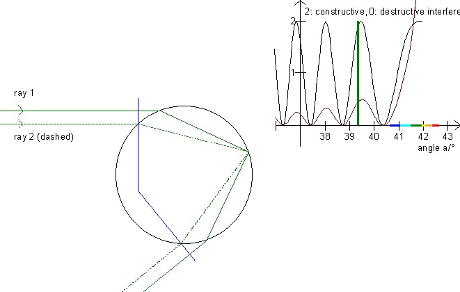

First examine interference in a thin film, then you will better understand this illustration!
Interference can often be seen near the primary rainbow and very rarely near the secondary rainbow. (See the interference on the start-up picture!) Consequently we will only consider the primary rainbow. On the graph for Alexander's band you can see that a ray with a scattering angle between 15° and 42° can originate from two different rays. For instance, draw a horizontal line at 25° and read the parameters on the 1. axis.

On this illustration, the scrollbar in the left panel moves one ray (the uppermost one) up and down. The program will then calculate the parameter for the second ray (dashed) which has the same scattering angle. Both rays are then drawn. Notice that the rays are parallel both before falling on the drop and after scattering in the drop. Next, the program calculates the distance traveled for both rays (between the orthogonal blue lines) and the number of wavelengths of these distances. Be aware that the wavelength of light within the drop is l' = l/n, where l is the wavelength of the light in vacuum and n is the index of refraction for water. Now that we have the number of wavelengths for each ray, we can determine whether they interfere constructively, destructively or something in between.
The little graph in the upper right shows the interference for the angles in the area 36° to the maximum angle. Move the rays up and down and read the difference of the distance traveled in the table while you look at the graph at the green line to see if there is constructive interference (the phases are the same) or destructive interference (the graph shows the waves are out of phase).
The interference depends on the intensity of the two rays. Notice that ray 2 (the dashed one) travels longer than ray 1. In turn, more light is left in ray 1. (See the figures in the table and cp. the Polarization paragraph.) Therefore, the two rays extinguish one another when they are out of phase. Press F6 to see the graph for perpendicularly polarized light taking into consideration corrections and the fact that the amount of light lessens with the distance from the rainbow (compare with »Colors of the rainbow«).
In a rainbow, the diameter varies from about 0,01 mm to a few mm. The interference pattern is best seen just below the »top« of the rainbow, because the pattern is smudged if the drops are not the same size. Be also aware that the diameter of the sun is 0,53°, so the interference pattern is also smudged if the distance between each crest is less than 0,53°.
Exercise 14
Change the color with the track bar in the lower left and observe the interference pattern for each color.
Change the drop’s diameter with the track bar in the upper left. How does the interference pattern change when the diameter is doubled?
In the table at the bottom, the ratio of the intensity of the two rays is displayed.
How does the angle a affect this ratio?
What can you say about the interference from the fact that the ratio is close to 1?